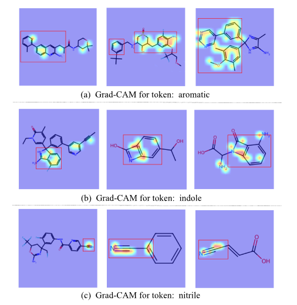

Abstract写作原则
作为刚刚完成论文投稿的研究生，在论文撰写中，我的摘要是与各位老师讨论、修改次数最多的部分，通过系统学习和反复实践，我对摘要撰写形成了以下三点核心认知：
1. 摘要的作用与结构
摘要本质是具有独立传播价值的微型论文，需同时满足"信息完整性"与"阅读独立性"要求。我采用信息性摘要结构，将300字左右的空间划分为五大要素：背景（15%）、目的（15%）、方法（25%）、结果（30%）、结论（15%）。每个要素采用"问题导向"叙述策略，例如在背景部分以"Although…remains unclear"句式切入，在方法部分强调"We developed a novel…“的创新点。
在我论文的摘要撰写中，我严格遵循信息性摘要的结构要求。针对分子图像-文本多模态表示这一新兴研究领域，我在背景部分采用"Although multimodal foundation models demonstrate remarkable understanding ability…existing models suffer from…“的句式，清晰指出了研究空白。在方法部分，重点突出了"three self-supervised learning strategies"和"cross-attention mechanism"的创新性。结果部分则通过具体数据（如"ROC-AUC score of 0.885”）强化了研究的可信度。
2. 逆向写作的实践策略
在第一次写撰写论文时，我按照论文顺序先写了摘要部分，导致摘要与正文脱节。在撰写时，应遵循"最后撰写摘要"原则，在完成全文后采用四步提炼法：首先标注正文各章节的关键句（3-5句/章），继而构建逻辑链（背景→矛盾→方法→证据→结论），然后进行信息压缩（删除案例细节、重复论证），最终进行语言优化（替换被动语态、消除冗余副词）。
具体实施时，首先从已完成的全文中提取关键信息：从引言中提炼出分子图像表示的重要性，从方法部分提取自监督学习策略和交叉注意力机制的核心创新点，从结果部分选取最具代表性的性能指标（如BBBP数据集的表现）和跨模态检索任务的R@5分数。通过这种逆向提炼的方法，确保了摘要与正文的高度一致性。
3. 常见误区的规避
通过摘要的反复修改，我总结出摘要撰写的四大禁忌：1）避免结论性表述缺乏数据支撑（如"significantly improved"需补充相应值）；2）克制方法细节过度展开（保留核心创新点即可）；3）杜绝自引文献与专业术语堆砌；4）警惕时态混用（背景用现在时，方法结果用过去时）。
例如，在描述模型性能时，始终确保有具体数据支撑（如"achieving an ROC-AUC score of 0.885”）；在方法描述上，仅保留"three self-supervised learning strategies"和"cross-attention mechanism"等核心创新点，避免过度展开技术细节；同时严格控制专业术语的使用频率，确保摘要的可读性；在时态使用上，背景描述采用现在时，而具体方法和结果采用过去时，保持了时态的一致性。
经验表明，优秀摘要的产出需要经历"框架搭建→要素填充→凝练优化"的迭代过程。建议新手研究者建立摘要自查清单，重点评估：是否覆盖研究闭环（从问题到结论）、是否突出创新贡献、是否具备独立传播价值这三个维度。通过系统训练，摘要写作能力可显著提升，最终成为论文的"学术名片"。
使用Grad-CAM进行图像注意力研究的心得体会
在我的研究中，我利用Grad-CAM技术探索了模型如何将文本描述与分子图像中的特定结构信息关联起来。这一过程不仅让我深入理解了Grad-CAM的工作原理，也让我对多模态模型的可解释性研究有了更深刻的体会。以下是我在使用Grad-CAM进行图像注意力研究中的三点核心心得：
- Grad-CAM在分子图像注意力研究中的独特优势
Grad-CAM通过梯度加权的方式生成热力图，能够直观地展示模型在图像中的关注区域。在分子图像研究中，这一特性尤为重要。例如，在处理“aromatic”这一文本token时，Grad-CAM热力图清晰地显示了模型对芳香环结构的高关注度，这与化学知识完全吻合。这种直观的可视化结果不仅验证了模型的有效性，也为后续的模型优化提供了方向。 此外，Grad-CAM的灵活性使其能够适应不同尺度的分子结构。无论是大范围的芳香环系统（如“aromatic”），还是小尺寸的功能基团（如“nitrile”），Grad-CAM都能准确地定位模型关注的关键区域。这种多尺度注意力分析能力为分子图像研究提供了强有力的工具。
- 实验设计与结果分析的挑战与突破
在使用Grad-CAM进行实验时，我遇到了两个主要挑战：一是如何选择合适的文本token来覆盖多样化的分子结构，二是如何确保热力图的可解释性与化学知识的一致性。 针对第一个挑战，我选择了“aromatic”“indole”和“nitrile”三个具有代表性的token，分别对应大范围结构、中等尺寸环系统和小尺寸功能基团。这种设计不仅覆盖了分子结构的多样性，也为后续的结果分析提供了清晰的对比。 针对第二个挑战，我对热力图的结果进行了多次验证。例如，在“indole”token的热力图中，模型准确地定位了苯环与吡咯环的融合区域，这与化学结构完全一致。
- Grad-CAM对模型可解释性研究的深远意义
Grad-CAM不仅是一种可视化工具，更是增强模型可解释性的重要手段。在我的研究中，Grad-CAM热力图直观地展示了模型如何将文本描述与分子图像中的关键结构关联起来。例如，在“nitrile”token的热力图中，模型准确地聚焦于碳氮三键区域，这证明了我的模型在识别小尺寸功能基团方面的能力。
此外，Grad-CAM还为模型的决策过程提供了透明化的解释。通过热力图，我们可以清晰地看到模型在预测分子性质时关注的关键区域，这为模型的可靠性提供了有力支持。这种透明化的解释框架不仅增强了用户对模型的信任，也为多模态任务的进一步研究奠定了基础。

Yang Sun
2023 graduate student
My research interests include multimodal models and molecular property predictions.